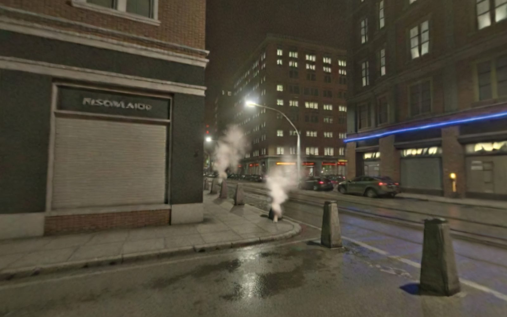

MARBLE STREET — LOOK PROOFPhotoreal generated Toronto street (World Labs Marble). This is the environment street fights would move into. Judge the look.
Drag to look around · scroll / W A S D to move · buttons to walk
▲
▼
LOADING THE STREET…
Streaming the generated world (about 8 MB). A few seconds on Wi-Fi.

The live 3D world did not start on this device, so here is a still from the same generated street. The look is the point: wet asphalt, sodium light, neon, steam.